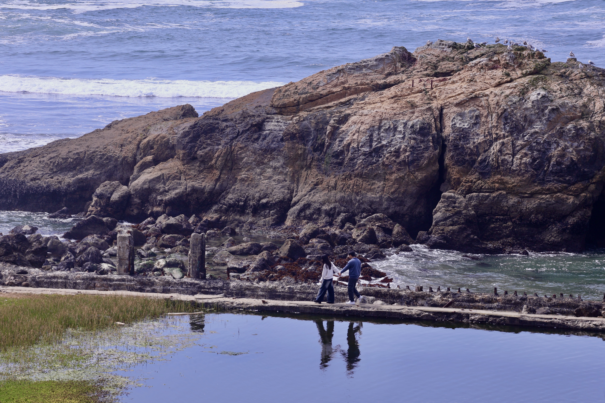

Portrait Photography
Yisi Ai is a portrait photographer based in California. His work focuses on capturing quiet moments in everyday life. Through natural light and simple compositions, the photographs document people at the edge of memory, youth, and transition. He is currently studying Digital Media Art at San José State University.
Instagram / TikTok / Xiaohongshu